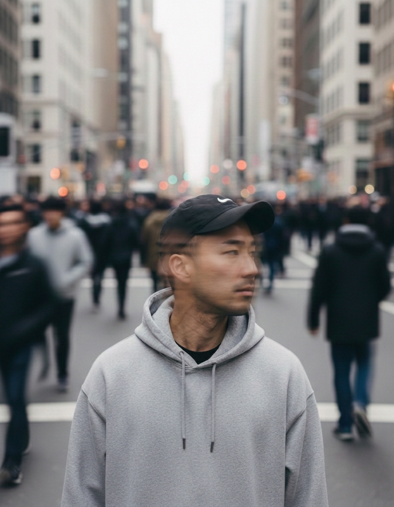

JeffreyN. Tse
Product engineering, AI systems, brand direction, cultural research, and interactive narrative.
Selected work.
Products, archives, interactive narrative, AI tools, and game systems with enough material behind them to be judged on the work itself.
Motion studies.
Character, product, and AI motion experiments with the strongest available source material, stills, and hover-play video.
Exhibitions.
Exhibition contexts and artwork documentation, kept separate from campaign and commercial writing.
Campaigns.
Public-facing campaign writing across technology, tourism, entertainment, and destination contexts.
Editorial.
Fashion editorial and interview-led writing kept separate from campaign work.
Writing and research.
Academic writing, essays, and citations. This section is text-led unless a work has a specific image or publication context worth opening.

Jeffrey N. Tse is a Hong Kong-based builder working across product engineering, AI systems, cultural research, brand direction, and interactive narrative.
His work combines shipped products, research-led archives, exhibition practice, and AI-assisted image and motion experiments. Across software, writing, and visual systems, the focus is on making complex ideas legible without flattening their context.